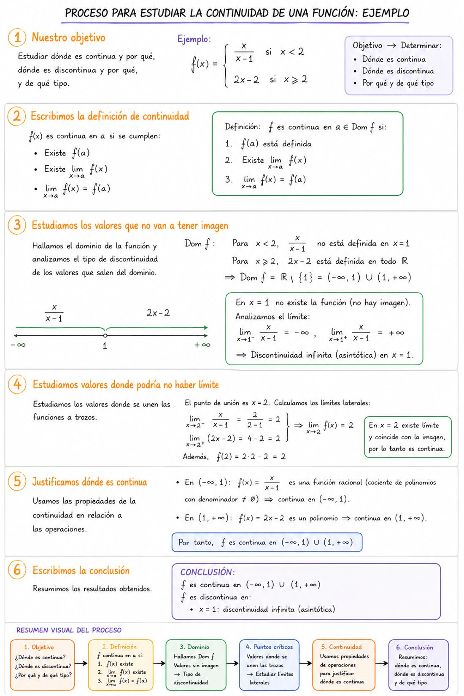

Aprende a determinar dónde una función es continua, identificar y clasificar discontinuidades, justificar la continuidad con el álgebra de funciones continuas y aplicar los teoremas de Bolzano, de los valores intermedios y de Weierstrass.
1 · Definición de continuidad en un punto
Una función \(f\) es continua en \(x=c\) si se cumplen simultáneamente tres condiciones:
1. Existe \(f(c)\) (la imagen está definida).
2. Existe \(\displaystyle\lim_{x\to c}f(x)\), es decir \(\displaystyle\lim_{x\to c^-}f(x)=\lim_{x\to c^+}f(x)\).
3. El límite coincide con la imagen: \(\displaystyle\lim_{x\to c}f(x)=f(c)\).
\[\lim_{x\to c^-}f(x)=\lim_{x\to c^+}f(x)=f(c)\]
📝 Ejemplo resuelto · Estudia la continuidad en \(x=2\) de \(f(x)=\begin{cases}x^2+1 & x\leq2\\3x-1 & x>2\end{cases}\)
Condición 1 · ¿Existe \(f(2)\)? Como \(2\leq2\), se usa el primer trozo: \(f(2)=2^2+1=5\). Existe.
Condición 2 · ¿Existe el límite? \(\displaystyle\lim_{x\to2^-}(x^2+1)=5\) y \(\displaystyle\lim_{x\to2^+}(3x-1)=5\). Los laterales coinciden: \(\displaystyle\lim_{x\to2}f(x)=5\).
Uno de los límites laterales no existe porque la función no está definida a ese lado de \(c\). Solo podemos acercarnos a \(c\) por un lado.
Ejemplo: \(f(x)=\sqrt{x-2}\) en \(x=2\): para \(x<2\) la raíz no está definida, así que \(\displaystyle\lim_{x\to2^-}f(x)\) no existe. Lo mismo ocurre con \(\ln x\) en \(x=0\).
Ojo: en el intervalo \([2,+\infty)\) esta función sí es continua, porque en el extremo solo se exige el límite lateral «hacia dentro» (ver punto 8).
Tipo
Límites laterales
¿Se puede evitar?
Evitable
Existen, son finitos e iguales (límite finito), pero ≠ \(f(c)\) o \(f(c)\) no existe
Sí, redefiniendo \(f(c)\)
1ª especie · salto finito
Existen, finitos y distintos
No
1ª especie · salto infinito
Existen y al menos uno es \(\pm\infty\) (asíntota vertical)
No
2ª especie
Uno no existe: \(f\) no está definida a ese lado
No
📝 Ejemplo resuelto · Clasifica las discontinuidades de \(f(x)=\dfrac{x^2-1}{x^2-3x+2}\)
Paso 1 · Puntos problemáticos. El denominador se anula: \(x^2-3x+2=(x-1)(x-2)=0\Rightarrow x=1,\ x=2\). En ellos \(f\) no está definida.
Paso 2 · Simplificar. \(f(x)=\dfrac{(x-1)(x+1)}{(x-1)(x-2)}=\dfrac{x+1}{x-2}\) para \(x\neq1\).
Paso 3 · En \(x=1\): \(\displaystyle\lim_{x\to1}\dfrac{x+1}{x-2}=\dfrac{2}{-1}=-2\). El límite existe y es finito, pero \(f(1)\) no existe → discontinuidad evitable.
Paso 4 · En \(x=2\): Numerador \(\to3\), denominador \(\to0\): \(\displaystyle\lim_{x\to2^-}f(x)=-\infty\), \(\displaystyle\lim_{x\to2^+}f(x)=+\infty\) → 1ª especie de salto infinito (asíntota vertical \(x=2\)).
x = 1: evitable (se evitaría con f(1) = −2) · x = 2: 1ª especie, salto infinito
3 · Consecuencias de la definición: operaciones con funciones continuas
De la definición de continuidad y de las propiedades de los límites se deduce un resultado muy útil:
Si \(f\) y \(g\) son continuas en \(x=a\), entonces también son continuas en \(x=a\):
La suma y la resta: \(f+g\) y \(f-g\).
El producto: \(f\cdot g\).
El cociente: \(\dfrac{f}{g}\), siempre que el denominador sea distinto de cero: \(g(a)\neq0\).
¿Por qué? Por ejemplo, para la suma: \(\displaystyle\lim_{x\to a}(f+g)(x)=\lim_{x\to a}f(x)+\lim_{x\to a}g(x)=f(a)+g(a)=(f+g)(a)\). Se cumplen las tres condiciones de la definición. Igual con la resta, el producto y el cociente (aquí hace falta \(g(a)\neq0\) para poder dividir).
Las constantes y \(f(x)=x\) son continuas en \(\mathbb{R}\). Sumando y multiplicando se obtienen todos los polinomios: las funciones polinómicas son continuas en \(\mathbb{R}\).
Una función racional \(\dfrac{P(x)}{Q(x)}\) es cociente de polinomios: es continua en todo \(\mathbb{R}\) salvo donde \(Q(x)=0\).
Para qué sirve: es la herramienta para indicar la razón de la continuidad en el estudio global de una función (paso 4 del punto 5). Redacción modelo: «En \((1,+\infty)\), \(f\) es continua por ser cociente de funciones polinómicas, continuas en \(\mathbb{R}\), cuyo denominador no se anula en ese intervalo».
📝 Ejemplo resuelto · ¿Dónde es continua \(h(x)=\dfrac{x^3-2x}{x-4}\)? Justifícalo.
Paso 1 · Numerador. \(x^3-2x\) es polinómica (sumas y productos de funciones continuas): continua en \(\mathbb{R}\).
Paso 2 · Denominador. \(x-4\) es polinómica: continua en \(\mathbb{R}\). Se anula solo en \(x=4\).
Paso 3 · Cociente. Por las consecuencias de la definición, el cociente de dos funciones continuas es continuo donde el denominador no se anula: \(h\) es continua si \(x\neq4\).
Paso 4 · En \(x=4\). \(h(4)\) no existe, así que \(h\) no es continua en \(x=4\). (Numerador \(\to56\), denominador \(\to0\): 1ª especie de salto infinito.)
h es continua en ℝ − {4} por ser cociente de funciones polinómicas con denominador no nulo
4 · Estudiar la continuidad en un punto: 3 pasos
Calcular \(f(c)\). Sustituye en el trozo correspondiente. Si da \(k/0\) (k≠0), \(f(c)\) no existe y los límites laterales serán infinitos (1ª especie, salto infinito); si da \(0/0\), indeterminación a resolver con el límite.
Calcular los límites laterales. \(\lim_{x\to c^-}f(x)\) y \(\lim_{x\to c^+}f(x)\) con el trozo correspondiente a cada lado. Si a un lado la función no está definida, ese lateral no existe (2ª especie).
Comparar. Si \(f(c)\) y el límite existen y coinciden → continua; si no, clasifica el tipo de discontinuidad.
📝 Ejemplo resuelto · Estudia la continuidad en \(x=3\) de \(f(x)=\begin{cases}\dfrac{x^2-9}{x-3} & x\neq3\\5 & x=3\end{cases}\)
Paso 1 · Calcular \(f(3)\). Para \(x=3\) la función vale directamente \(f(3)=5\).
Paso 2 · Límites laterales. Para \(x\neq3\): \(\dfrac{x^2-9}{x-3}=\dfrac{(x-3)(x+3)}{x-3}=x+3\). Por tanto \(\displaystyle\lim_{x\to3^-}f(x)=\lim_{x\to3^+}f(x)=6\).
Paso 3 · Comparar. El límite existe y vale 6, pero \(f(3)=5\neq6\). Falla la tercera condición.
Discontinuidad evitable en x = 3 (se evitaría redefiniendo f(3) = 6)
5 · Estudio global de continuidad: 5 pasos
Definición. Recuerda las 3 condiciones de continuidad en un punto.
Dominio. Halla los valores que quedan fuera del dominio: son discontinuidades seguras. Clasifícalas con el límite.
Puntos de enlace. En funciones a trozos, estudia los puntos donde cambia la definición: calcula \(\lim^-\), \(\lim^+\) y \(f(c)\).
Justificar el resto. Usa las consecuencias de la definición y el álgebra de funciones continuas (ver puntos 3 y 7) para el resto del dominio: indica siempre la razón de la continuidad.
Conclusión. \(f\) continua en \(\mathbb{R}-\{x_1,x_2,...\}\); en cada \(x_i\): tipo de discontinuidad.
📝 Ejemplo resuelto · Estudia la continuidad de \(f(x)=\begin{cases}\dfrac{2}{x+2} & x<0\\x+1 & 0\leq x\leq2\\4 & x>2\end{cases}\)
Paso 1 · Definición. \(f\) es continua en \(x=c\) si existe \(f(c)\), existe el límite y coinciden.
Paso 2 · Dominio. El primer trozo no está definido en \(x=-2\), que pertenece a \(x<0\). \(\text{Dom}f=\mathbb{R}-\{-2\}\). En \(x=-2\): \(\displaystyle\lim_{x\to-2^-}\dfrac{2}{x+2}=-\infty\), \(\displaystyle\lim_{x\to-2^+}\dfrac{2}{x+2}=+\infty\) → 1ª especie, salto infinito.
Paso 3 · Puntos de enlace.En \(x=0\): \(f(0)=1\); \(\displaystyle\lim_{x\to0^-}\dfrac{2}{x+2}=1\); \(\displaystyle\lim_{x\to0^+}(x+1)=1\) → continua. En \(x=2\): \(f(2)=3\); \(\displaystyle\lim_{x\to2^-}(x+1)=3\); \(\displaystyle\lim_{x\to2^+}4=4\) → 1ª especie, salto finito (salto 1).
Paso 4 · Justificar el resto. En \((-\infty,-2)\cup(-2,0)\), \(f\) es cociente de polinómicas con denominador no nulo; en \((0,2)\) es polinómica; en \((2,+\infty)\) es constante. En todos esos intervalos es continua (punto 3).
Paso 5 · Conclusión. \(f\) es continua en \(\mathbb{R}-\{-2,\,2\}\).
x = −2: 1ª especie, salto infinito · x = 2: 1ª especie, salto finito · continua en el resto

Esta es la redacción que se espera en un ejercicio de estudio global: objetivo → definición → dominio → puntos críticos → justificación con propiedades → conclusión. La nota no depende solo de si el resultado es correcto, sino de si se explica bien el razonamiento en cada paso.
6 · Hallar parámetros para que una función sea continua
La idea clave: igualar el límite por la izquierda con el límite por la derecha (y con \(f(c)\) si hace falta) en cada punto de unión. Cada punto crítico da una ecuación; con dos parámetros se forma un sistema.
Ejemplo con un parámetro
\(f(x)=\begin{cases}2x+3 & x<1\\ax^2-5x-2 & x\geq1\end{cases}\). Continuidad en \(x=1\):
No basta con dar el resultado correcto: hay que redactar el proceso completo — escribir la función, el dominio, identificar los puntos críticos, imponer la continuidad en cada uno, resolver el sistema y comprobar — siguiendo siempre este orden de pasos.
📝 Ejemplo resuelto · Halla \(k\) para que \(f(x)=\begin{cases}kx+1 & x\leq2\\x^2-k & x>2\end{cases}\) sea continua en \(\mathbb{R}\)
1 · Escribimos la función. Es una función a trozos con el parámetro \(k\).
2 · Dominio. Los dos trozos son polinómicos: \(\text{Dom}f=\mathbb{R}\), sin restricciones.
3 · Puntos críticos. Solo el punto de enlace \(x=2\). En el resto, \(f\) es polinómica y por tanto continua.
4 · Imponemos la continuidad en \(x=2\). \(\displaystyle\lim_{x\to2^-}(kx+1)=2k+1=f(2)\); \(\displaystyle\lim_{x\to2^+}(x^2-k)=4-k\). Igualamos: \(2k+1=4-k\).
5 · Resolvemos. \(3k=3\Rightarrow k=1\).
6 · Comprobación. Con \(k=1\): \(\lim^-=3\), \(\lim^+=4-1=3\), \(f(2)=3\). Coinciden.
7 · Conclusión. Para \(k=1\), \(f\) es continua en \(\mathbb{R}\).
k = 1
7 · Álgebra de funciones continuas y composición
Las operaciones básicas (suma, resta, producto y cociente) están en el punto 3. Aquí se amplía la lista y se estudia la composición.
Si \(f\) y \(g\) son continuas en \(x=a\):
\(f\pm g\) es continua en \(a\).
\(f\cdot g\) es continua en \(a\).
\(\dfrac{f}{g}\) es continua en \(a\) si \(g(a)\neq0\).
\(f^n\), \(k\cdot f\), \(e^{f(x)}\) son continuas en \(a\).
Consecuencias: las funciones polinómicas son continuas en \(\mathbb{R}\); las racionales \(P(x)/Q(x)\) son continuas donde \(Q(x)\neq0\); \(e^{f(x)}\) es continua donde \(f\) lo sea; \(\ln(f(x))\) es continua donde \(f(x)>0\) y sea continua.
Continuidad de la composición \(g\circ f\) en \(x=a\):
1) \(f\) continua en \(a\) 2) \(g\) continua en \(f(a)\)
Ejemplos de continuidad de la composición
a) \(h(x)=\sqrt{x^2-4x+5}\). Es \(g\circ f\) con \(f(x)=x^2-4x+5\) (polinómica, continua en \(\mathbb{R}\)) y \(g(t)=\sqrt{t}\) (continua para \(t\geq0\)).
Como \(x^2-4x+5=(x-2)^2+1\geq1>0\) para todo \(x\), \(g\) es continua en cada \(f(x)\). \(h\) es continua en \(\mathbb{R}\).
b) \(h(x)=\ln(x^2-1)\). \(f(x)=x^2-1\) es continua en \(\mathbb{R}\), pero \(g(t)=\ln t\) solo es continua para \(t>0\): hay que exigir \(x^2-1>0\).
\(h\) es continua en \((-\infty,-1)\cup(1,+\infty)\).
c) \(h(x)=e^{1/(x-2)}\). \(g(t)=e^t\) es continua en \(\mathbb{R}\), pero \(f(x)=\frac{1}{x-2}\) no es continua en \(x=2\).
\(h\) es discontinua en \(x=2\) y continua en \(\mathbb{R}-\{2\}\).
¿Y si las funciones son discontinuas?
El álgebra de funciones continuas solo funciona «hacia delante». Si \(f\) y \(g\) son discontinuas en \(a\), la suma puede ser continua o no:
La suma es continua: \(f(x)=\begin{cases}1 & x\geq0\\0 & x<0\end{cases}\) y \(g(x)=\begin{cases}0 & x\geq0\\1 & x<0\end{cases}\) tienen un salto finito en \(x=0\).
Sin embargo, \((f+g)(x)=1\) para todo \(x\): \(f+g\) es continua en \(x=0\). Los dos saltos se compensan.
La suma es discontinua: con la misma \(f\), tomando \(g=f\): \((f+g)(x)=\begin{cases}2 & x\geq0\\0 & x<0\end{cases}\).
Los saltos se suman: \(f+g\) es discontinua en \(x=0\) (salto finito de 2).
Regla útil: continua + discontinua es siempre discontinua. Si \(f+g\) y \(g\) fueran continuas, también lo sería \(f=(f+g)-g\).
📝 Ejemplo resuelto · ¿Dónde es continua \(h(x)=\sqrt{\dfrac{x-1}{x+2}}\)?
Paso 1 · Identificar la composición. \(h=g\circ f\) con \(f(x)=\dfrac{x-1}{x+2}\) (función de dentro) y \(g(t)=\sqrt{t}\) (función de fuera).
Paso 2 · Continuidad de \(f\). \(f\) es cociente de polinómicas: continua en \(\mathbb{R}-\{-2\}\).
Paso 3 · Continuidad de \(g\) en \(f(x)\). \(g(t)=\sqrt t\) es continua para \(t\geq0\): hay que exigir \(\dfrac{x-1}{x+2}\geq0\). Estudiando el signo (se anula en \(x=1\), no existe en \(x=-2\)): es positivo si \(x<-2\), negativo si \(-2<x<1\) y \(\geq0\) si \(x\geq1\).
Paso 4 · Conclusión. \(h\) es continua en \((-\infty,-2)\cup[1,+\infty)\). En \(x=1\) solo existe el límite por la derecha (continuidad lateral, punto 8).
h es continua en (−∞, −2) ∪ [1, +∞)
8 · Continuidad en un intervalo
Una función \(f\) es continua en un intervalo abierto \((a,b)\) si es continua en cada uno de sus puntos.
\(f\) es continua en el intervalo cerrado \([a,b]\) si:
1. Es continua en todos los puntos de \((a,b)\).
2. Es continua por la derecha en \(a\): \(\displaystyle\lim_{x\to a^+}f(x)=f(a)\).
3. Es continua por la izquierda en \(b\): \(\displaystyle\lim_{x\to b^-}f(x)=f(b)\).
En los extremos solo se exige el límite lateral «hacia dentro» del intervalo. Recuerda dónde son continuas las funciones elementales:
Polinómicas, \(\sin x\), \(\cos x\), \(a^x\) \((a>0)\): continuas en todo \(\mathbb{R}\).
Racionales: continuas en todo intervalo que no contenga raíces del denominador.
\(\tan x\): continua donde \(\cos x\neq0\), es decir, \(x\neq\frac{\pi}{2}+k\pi\).
\(\log_a x\): continua en \((0,+\infty)\); \(\sqrt{g(x)}\): donde \(g(x)\geq0\) y \(g\) sea continua.
📝 Ejemplo resuelto · ¿Es \(f(x)=\sqrt{x-1}+\dfrac{1}{x-4}\) continua en \([1,3]\)? ¿Y en \([3,5]\)?
Paso 1 · Interior \((1,3)\). \(\sqrt{x-1}\) es continua porque \(x-1>0\); \(\dfrac{1}{x-4}\) es continua porque \(x\neq4\). Su suma es continua (punto 3).
Paso 2 · Extremo izquierdo \(x=1\). \(f(1)=0-\tfrac13=-\tfrac13\) y \(\displaystyle\lim_{x\to1^+}f(x)=-\tfrac13\). Continua por la derecha.
Paso 3 · Extremo derecho \(x=3\). \(f(3)=\sqrt2-1\) y \(\displaystyle\lim_{x\to3^-}f(x)=\sqrt2-1\). Continua por la izquierda.
Paso 4 · Intervalo \([3,5]\). Contiene \(x=4\), donde \(\dfrac{1}{x-4}\) no está definida: \(f\) no es continua en \([3,5]\).
f es continua en [1, 3], pero no en [3, 5]
9 · Teoremas sobre funciones continuas
Cuando una función es continua en un intervalo cerrado, podemos asegurar propiedades muy potentes aunque no sepamos calcular exactamente los valores. Son teoremas de existencia: garantizan que algo existe, pero no dicen dónde ni cuántas veces ocurre.
9.1 · Teorema de Bolzano (teorema de los ceros)
Si \(f\) es continua en \([a,b]\) y \(f(a)\) y \(f(b)\) tienen distinto signo, es decir, \(f(a)\cdot f(b)<0\), entonces existe al menos un \(c\in(a,b)\) tal que \(f(c)=0\).
Interpretación geométrica: si los puntos \((a,f(a))\) y \((b,f(b))\) de una gráfica continua están a distinto lado del eje \(X\), la gráfica tiene que cortar el eje \(X\) en algún punto entre \(a\) y \(b\) (puede cortarlo más de una vez).
Enunciado equivalente: la ecuación \(f(x)=0\) tiene al menos una solución en \((a,b)\).
La curva no puede pasar de estar por debajo del eje a estar por encima sin cortarlo, porque no tiene «saltos».
Cómo redactar una aplicación de Bolzano (se valora el proceso, no solo la conclusión):
Definir la función. Si piden una ecuación, pásalo todo a un miembro: \(f(x)=\ldots=0\). Si piden que dos curvas se corten, define \(h(x)=f(x)-g(x)\).
Justificar la continuidad en \([a,b]\). Con el álgebra de funciones continuas: «es polinómica», «es suma de continuas», «el denominador no se anula en \([a,b]\)»…
Calcular \(f(a)\) y \(f(b)\) y comprobar que tienen signos distintos.
Concluir citando el teorema: «Por el teorema de Bolzano, \(\exists\,c\in(a,b)\) tal que \(f(c)=0\)», y traducirlo a lo que pide el enunciado.
¡Las dos hipótesis son imprescindibles! Si falla la continuidad, el teorema no se puede aplicar aunque haya cambio de signo.
Sin continuidad: \(f(x)=\frac{1}{x}\) en \([-1,1]\). \(f(-1)=-1<0\) y \(f(1)=1>0\), pero \(f\) nunca vale 0: no es continua en \(x=0\).
El recíproco es falso: \(f(x)=x^2-1\) en \([-2,2]\). \(f(-2)\cdot f(2)=9>0\) y, sin embargo, tiene dos raíces: \(x=\pm1\). Si no hay cambio de signo, Bolzano no dice nada.
Localizar la raíz (método de bisección): se parte el intervalo por la mitad y nos quedamos con la mitad donde sigue habiendo cambio de signo. Repitiéndolo se aproxima la raíz tanto como se quiera. Para dar la raíz «con una cifra decimal» basta encontrar un intervalo de amplitud \(0{,}1\) con cambio de signo.
📝 Ejemplo resuelto · Demuestra que la ecuación \(\cos x=x\) tiene solución en \(\left(0,\tfrac{\pi}{2}\right)\)
1 · Función. Pasamos todo a un miembro: \(h(x)=\cos x-x\). Buscamos \(c\) con \(h(c)=0\).
2 · Continuidad. \(\cos x\) y \(x\) son continuas en \(\mathbb{R}\); su diferencia también (punto 3). Es continua en \(\left[0,\tfrac{\pi}{2}\right]\).
4 · Teorema. Por Bolzano, \(\exists\,c\in\left(0,\tfrac{\pi}{2}\right)\) con \(h(c)=0\), es decir, \(\cos c=c\).
La ecuación cos x = x tiene al menos una solución en (0, π/2)
9.2 · Teorema de los valores intermedios (Darboux)
Si \(f\) es continua en \([a,b]\) y \(K\) es un número comprendido entre \(f(a)\) y \(f(b)\), entonces existe al menos un \(c\in(a,b)\) tal que \(f(c)=K\).
Una función continua en un intervalo cerrado toma todos los valores comprendidos entre \(f(a)\) y \(f(b)\). Es una consecuencia directa de Bolzano: basta aplicarlo a \(g(x)=f(x)-K\), que cumple \(g(a)\cdot g(b)<0\).
Cualquier recta horizontal \(y=K\) entre \(f(a)\) y \(f(b)\) corta la gráfica al menos una vez.
Consecuencia (corte de dos gráficas): si \(f\) y \(g\) son continuas en \([a,b]\), \(f(a)<g(a)\) y \(f(b)>g(b)\), entonces existe \(c\in(a,b)\) con \(f(c)=g(c)\).
Se demuestra aplicando Bolzano a \(h(x)=f(x)-g(x)\): \(h(a)<0\) y \(h(b)>0\).
📝 Ejemplo resuelto · ¿Toma \(f(x)=e^x+x\) el valor 2 en algún punto de \((0,1)\)?
1 · Continuidad. \(e^x\) y \(x\) son continuas en \(\mathbb{R}\): su suma es continua en \([0,1]\).
2 · Valores en los extremos. \(f(0)=1+0=1\) · \(f(1)=e+1\approx3{,}72\).
3 · Teorema. Como \(1<2<3{,}72\), por el teorema de los valores intermedios \(\exists\,c\in(0,1)\) con \(f(c)=2\).
Sí: f toma el valor 2 en algún punto de (0, 1)
9.3 · Teorema de Weierstrass
Si \(f\) es continua en el intervalo cerrado \([a,b]\), entonces \(f\) alcanza en \([a,b]\) un máximo absoluto y un mínimo absoluto: existen \(x_1,x_2\in[a,b]\) tales que \(f(x_1)\leq f(x)\leq f(x_2)\) para todo \(x\in[a,b]\).
El máximo absoluto es el mayor valor que toma la función en el intervalo y el mínimo absoluto el menor. Pueden alcanzarse en el interior o en los extremos \(a\) y \(b\). El teorema asegura que existen, pero no dice dónde están.
🔎 Truco: ¿dónde buscar el máximo y el mínimo?
Los candidatos a máximo y mínimo absolutos en \([a,b]\) son solo tres tipos de puntos:
Los extremos del intervalo: \(x=a\) y \(x=b\).
Los puntos donde se enlazan las funciones (en funciones a trozos).
Los puntos donde la derivada es cero: \(f'(x)=0\), siempre que estén dentro de \([a,b]\).
Una vez localizados, se calcula la imagen de cada candidato y se comparan: la imagen más alta es el máximo absoluto y la más baja, el mínimo absoluto. Mira el ejemplo resuelto de abajo y los ejemplos 10 y 11.
Las hipótesis vuelven a ser imprescindibles: intervalo cerrado y función continua.
Intervalo abierto: \(f(x)=x\) en \((0,1)\) toma valores tan cerca de 1 como queramos, pero nunca vale 1: no tiene máximo (ni mínimo).
Sin continuidad: \(f(x)=\frac{1}{x}\) en \([-1,1]\) (con \(x\neq0\)) no está acotada: cerca de 0 toma valores arbitrariamente grandes, así que no tiene máximo.
📝 Ejemplo resuelto · Halla el máximo y el mínimo absolutos de \(f(x)=x^3-3x\) en \([0,2]\)
1 · Existencia. \(f\) es polinómica, continua en el intervalo cerrado \([0,2]\): por Weierstrass tiene máximo y mínimo absolutos.
2 · Candidatos (truco). Extremos: \(x=0\) y \(x=2\). Enlaces: no hay. Derivada cero: \(f'(x)=3x^2-3=0\Rightarrow x=\pm1\); solo \(x=1\) está en \([0,2]\).
4 · Comparar. La imagen más alta es 2 y la más baja, −2.
Máximo absoluto 2 (en x = 2) · Mínimo absoluto −2 (en x = 1)
Resumen. Los tres teoremas exigen \(f\) continua en \([a,b]\). Bolzano añade \(f(a)\cdot f(b)<0\) y garantiza un cero; valores intermedios garantiza que se alcanza cualquier \(K\) entre \(f(a)\) y \(f(b)\); Weierstrass garantiza máximo y mínimo absolutos.
Dominio: para x<2, x/(x-1) no definida en x=1 → discontinuidad en x=1. Límites laterales: −∞ y +∞ → 1ª especie de salto infinito (asíntota vertical x=1).
Punto de enlace x=2: \(\lim_{x\to2^-}\frac{x}{x-1}=2\), \(\lim_{x\to2^+}(2x-2)=2\), \(f(2)=2\). Coinciden → continua en x=2.
f continua en (−∞,1)∪(1,+∞); discontinua en x=1 (1ª especie, salto infinito)
Ejemplo 5 — Teorema de Bolzano: existencia de una raíz
Demuestra que la ecuación \(x^3+x-5=0\) tiene al menos una solución en el intervalo \((1,2)\).
Función: definimos \(f(x)=x^3+x-5\) en \([1,2]\).
Continuidad: \(f\) es polinómica, luego continua en \(\mathbb{R}\) y, en particular, en \([1,2]\).
Signos: \(f(1)=1+1-5=-3<0\) · \(f(2)=8+2-5=5>0\). Hay cambio de signo.
Teorema: por Bolzano, \(\exists\,c\in(1,2)\) tal que \(f(c)=0\), es decir, \(c^3+c-5=0\).
La ecuación tiene al menos una solución en (1, 2).
Ejemplo 6 — Localizar la raíz con una cifra decimal
Aproxima con una cifra decimal la raíz de \(x^3+x-5=0\) del ejemplo anterior.
Evaluamos \(f\) en puntos intermedios y buscamos el cambio de signo:
\(x\)
1
1,5
1,6
2
\(f(x)\)
−3
−0,125
0,696
5
signo
−
−
+
+
Como \(f(1{,}5)<0\) y \(f(1{,}6)>0\), por Bolzano la raíz está en \((1{,}5;\,1{,}6)\).
c ≈ 1,5 (la raíz está entre 1,5 y 1,6)
Ejemplo 7 — Corte de dos gráficas (valores intermedios)
Prueba que las gráficas de \(f(x)=\ln x\) y \(g(x)=e^{-x}\) se cortan en algún punto del intervalo \((1,2)\).
Función auxiliar: \(h(x)=\ln x-e^{-x}\). Las gráficas se cortan donde \(h(x)=0\).
Continuidad: \(\ln x\) es continua en \((0,+\infty)\) y \(e^{-x}\) en \(\mathbb{R}\); su diferencia es continua en \((0,+\infty)\supset[1,2]\).
Teorema: por Bolzano aplicado a \(h\), \(\exists\,c\in(1,2)\) con \(h(c)=0\), es decir, \(\ln c=e^{-c}\).
Las gráficas de f y g se cortan en algún punto de abscisa c ∈ (1, 2).
Ejemplo 8 — Teorema de los valores intermedios
¿Existe algún \(x\in(0,2)\) tal que \(f(x)=x^3+x\) valga exactamente 7?
Continuidad: \(f\) es polinómica, luego continua en \([0,2]\).
Valores en los extremos: \(f(0)=0\) y \(f(2)=10\).
Teorema: como \(0<7<10\), por el teorema de los valores intermedios \(\exists\,c\in(0,2)\) tal que \(f(c)=7\).
Sí: f toma el valor 7 en algún punto de (0, 2).
Ejemplo 9 — ¿Se puede aplicar el teorema? (hipótesis)
Sea \(f(x)=\dfrac{x+1}{x-2}\). ¿Garantiza Bolzano una raíz en \((0,3)\)? ¿Y en \((-3,0)\)?
En \([0,3]\): \(f(0)=-\frac{1}{2}<0\) y \(f(3)=4>0\), pero \(f\) no es continua en \(x=2\in[0,3]\) (el denominador se anula). No se cumplen las hipótesis: Bolzano no se puede aplicar. De hecho, la única raíz es \(x=-1\notin(0,3)\).
En \([-3,0]\): \(f\) es racional y su denominador no se anula en \([-3,0]\), así que es continua. \(f(-3)=\frac{-2}{-5}=\frac{2}{5}>0\) y \(f(0)=-\frac{1}{2}<0\). Por Bolzano hay una raíz en \((-3,0)\) (es \(x=-1\)).
En (0, 3) no se puede aplicar Bolzano; en (−3, 0) sí, y garantiza una raíz.
Ejemplo 10 — Teorema de Weierstrass
¿Alcanza \(f(x)=x^2-4x+7\) un máximo y un mínimo absolutos en \([0,5]\)? Calcúlalos.
Existencia: \(f\) es polinómica, luego continua en el intervalo cerrado \([0,5]\). Por Weierstrass, alcanza máximo y mínimo absolutos en \([0,5]\).
Candidatos (truco):
extremos \(x=0\) y \(x=5\); no hay enlaces; \(f'(x)=2x-4=0\Rightarrow x=2\in[0,5]\).
\(x\)
0 (extremo)
2 (\(f'=0\))
5 (extremo)
\(f(x)\)
7
3
12
Mínimo absoluto 3 (en x = 2) · Máximo absoluto 12 (en x = 5)
Ejemplo 11 — Weierstrass con una función a trozos
Halla el máximo y el mínimo absolutos de \(f(x)=\begin{cases}x^2+2x & x<0\\-x^2+2x & x\geq0\end{cases}\) en \([-2,3]\).
Continuidad: cada trozo es polinómico. En el enlace \(x=0\): \(\displaystyle\lim_{x\to0^-}(x^2+2x)=0\), \(\displaystyle\lim_{x\to0^+}(-x^2+2x)=0\) y \(f(0)=0\). Es continua en \([-2,3]\), así que Weierstrass garantiza máximo y mínimo.
Candidatos:
extremos \(x=-2\) y \(x=3\); enlace \(x=0\);
derivada cero: en \(x<0\), \(2x+2=0\Rightarrow x=-1\) ✓; en \(x\geq0\), \(-2x+2=0\Rightarrow x=1\) ✓.
\(x\)
−2 (extremo)
−1 (\(f'=0\))
0 (enlace)
1 (\(f'=0\))
3 (extremo)
\(f(x)\)
0
−1
0
1
−3
Fíjate en que el mínimo está en un extremo del intervalo: por eso nunca hay que olvidarse de los extremos.
Máximo absoluto 1 (en x = 1) · Mínimo absoluto −3 (en x = 3)
Autoevaluación: las formativas se hacen en tu panel
Las formativas de este tema están en tu panel personal. Entra con tu nombre, tus apellidos y tu contraseña (la primera vez, crea tu cuenta con el código de clase que te da tu profesora).
Parte 1 · Teoría (10 preguntas · 9 de 10 para superarla)
Preguntas de concepto, trampa y "encuentra el error" sobre definición, tipos de discontinuidad, parámetros, álgebra de funciones continuas y teoremas de Bolzano, valores intermedios y Weierstrass.
Parte 2 · Aplicación (10 ejercicios · 9 de 10 para superarla)
Ejercicios con números distintos cada vez. Se desbloquea al superar la Parte 1.
Si no la superas
Tu informe te dirá qué apartados repasar, con enlaces a la teoría y a los ejemplos de esta página. Practicas hasta conseguir 5 aciertos seguidos y después haces una comprobación corta.